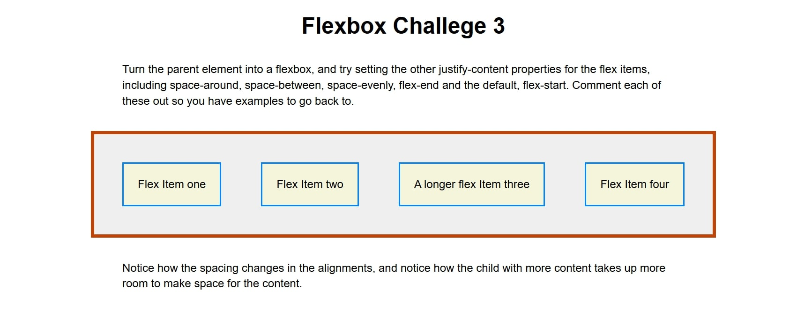
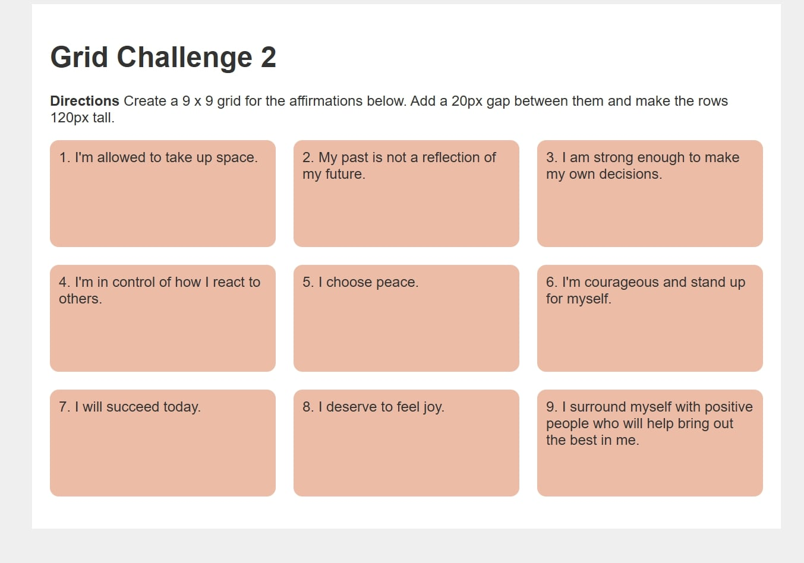
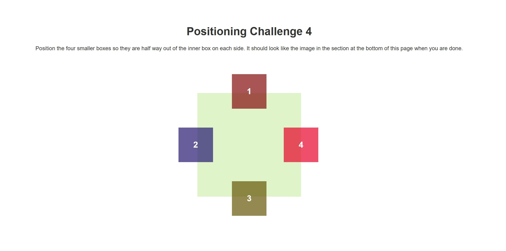
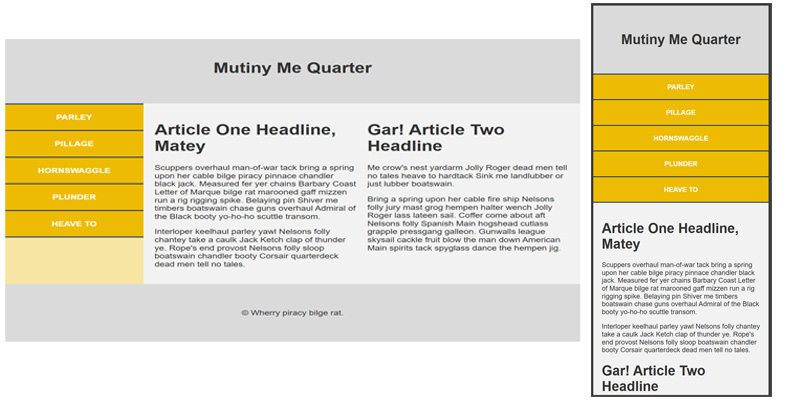

CSS Layout Techniques: Flexbox, Grid, Positioning, and Responsive Design
February 23, 2025
Flexible Box Layout (Flexbox)
Before learning about Flexbox, I struggled with aligning elements properly. Using floats and inline-block often led to inconsistent spacing and alignment issues. But Flexbox changed everything for me. I found it much easier to distribute space and position items dynamically within a container.
Key properties I explored include:
display: flex;- Defines a flex container, allowing items to align efficiently.justify-content- Helps align items horizontally with properties likecenterandspace-between.align-items- Controls vertical alignment, which was something I previously found tricky.flex-wrap- Allows elements to wrap instead of shrinking uncomfortably in smaller screens.

CSS Grid Layout
I had heard about CSS Grid before, but I never fully understood how powerful it was until I experimented with it. Unlike Flexbox, which is one-dimensional, Grid lets me control both rows and columns at the same time. This made it much easier to create complex layouts without relying on extra divs.
Important concepts I explored:
grid-template-columns- Helps me define column structures efficiently.grid-template-rows- Allows me to control row heights precisely.grid-area- Makes it easy to assign elements to specific grid sections without unnecessary nesting.

Positioning Techniques
Before this, I often got frustrated when elements didn’t stay where I wanted them to. Learning about different positioning methods helped me gain more control over layouts.
Here’s what I experimented with:
position: relative;- I used this to adjust elements slightly without affecting other content.position: absolute;- I realized how powerful this is for placing elements exactly where I need them.position: fixed;- This was useful when I wanted to keep a navigation bar visible while scrolling.position: sticky;- I found this helpful when I wanted an element to stay in place but only when scrolling reaches a certain point.

Responsive Web Design
One of the most exciting things I learned was how to make my designs responsive without creating multiple versions of the same site. I used media queries to adjust layouts based on screen size.
Some techniques that made a big difference:
@media (max-width: 768px)- This helped me make adjustments for mobile screens without affecting desktop views.flex-wrap: wrap;- Before learning this, I struggled with elements shrinking too much. This made my layouts more adaptable.minmax()- This function in CSS Grid helped me create columns that remain flexible but don’t shrink too much.
